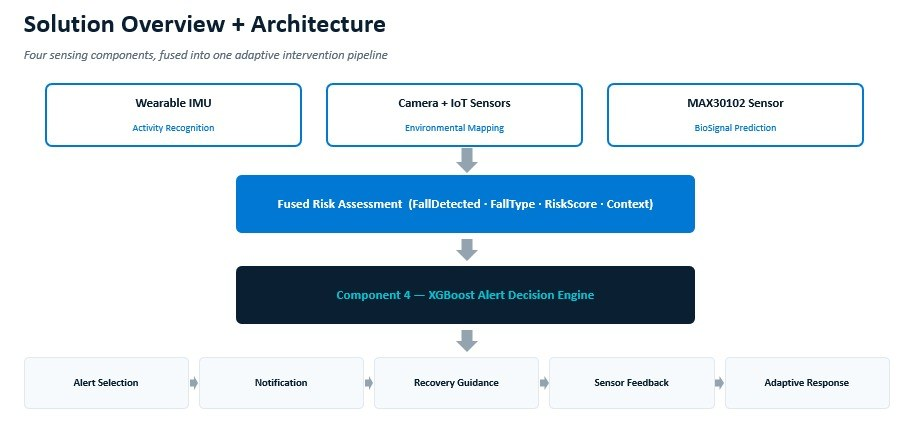

From sensing to intervention: the AegisCare end-to-end architecture
Four sensing components are fused into one adaptive intervention pipeline. Select any block to open the component it belongs to.
Wearable IMU
Activity recognition: posture, fall type, tilt and stay-down check.
Component 2Camera and IoT sensors
Environmental mapping: moisture, light, obstacles, risk map.
Component 3MAX30102 sensor
Biosignal prediction: heart rate, blood pressure, fall-risk status.
Fused risk assessment
The evidence from every component is combined into one structured result.
XGBoost alert decision engine
Chooses a voice alert, a caregiver alert or an emergency alert.
Component 3 streams vitals in parallel. The classifier in Component 4 takes its nine features from the fall event, the environmental context and the stored elder risk profile.
Solution overview diagram
The diagram the team used to present the overall solution: three sensing components feed a fused risk assessment, which the alert decision engine turns into five response stages.

Click to enlargeWhat happens at each level of the system
Wearable BMI160 motion sensor, light, moisture and distance sensors with an optional camera, and the MAX30102 optical sensor.
Wemos D1 Mini (ESP8266) and ESP32 boards calibrate, filter and package readings, then send them over Wi-Fi using MQTT (HiveMQ Cloud with TLS) and WebSocket.
A Flask backend runs the Random Forest and the Fall Engine, hazard detection and risk mapping, and the PPG-to-blood-pressure model with fall-risk prediction.
An XGBoost classifier turns nine features from the fall event, environmental context and elder risk profile into one of three response levels.
A React web platform for institutions, a mobile app for caregivers, and a Supabase database for stored vitals and events. Sensor feedback adapts the next response.
Hardware and data-flow diagrams for each component
Every component page has its own system diagram that you can enlarge.